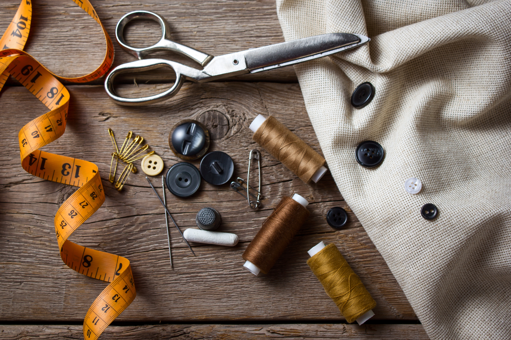

Naaien is een goede hobby omdat het zowel creatief als praktisch is, het stress vermindert en je mentale en fysieke vaardigheden stimuleert. Je kunt je zelfvertrouwen vergroten door unieke items te creëren, je fijne motoriek verbeteren, en het is een duurzamere manier om aan je kleding te komen. Bovendien kan het sociaal verbindend werken en biedt het een kalmerende, meditatieve activiteit.
Als je ook wil leren naaien kan je dat hier.
